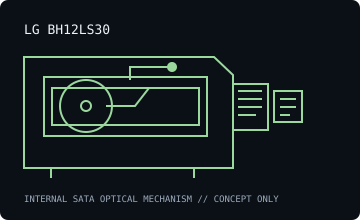

[ INDIVIDUAL COMPONENT // OPTICAL DRIVES ]
LG BH12LS30
Internal SATA Blu-ray writer rated for BD-R up to 12×, with LightScribe and DVD-RAM support. Specifications are model-specific; maximum ratings depend on media, firmware and recording mode.

IDENTIFICATION: LG BH12LS30 · match the full model suffix and OEM label to the cited documentation before assigning capabilities.
Documented specifications
| Catalog subcategory | Blu-ray drives |
|---|---|
| Exact model | LG BH12LS30 |
| Drive type | Internal 12× LightScribe Blu-ray Disc rewriter |
| Supported media and read/write formats | Reads BD-ROM up to 10× and supports BD-R/BD-RE, DVD-ROM and CD-ROM; writes BD-R (single/dual layer) up to 12×, BD-RE up to 2×, DVD±R up to 16×, DVD-RAM up to 12×, CD-R up to 48× and CD-RW up to 24×. |
| Rated maximum speeds | BD-R up to 12×; BD-RE 2×; BD-ROM read up to 10×; DVD±R 16×; DVD-RAM 12×; CD-R 48×; CD-RW 24×. SATA 1.5 Gb/s class link as specified for this generation. |
| Interface and mechanical fit | Internal Serial ATA (SATA), 5.25-inch half-height desktop mechanism. Confirm connector, front bezel, mounting screw positions, clearance and supply before installation; do not treat this summary as a dimensional drawing. |
| Host compatibility | Internal 5.25-inch half-height SATA connection for compatible PC motherboards/controllers and a SATA power lead. Host OS must enumerate a SATA optical drive; Blu-ray software, codecs and protected-playback support are separate requirements. LightScribe needs compatible labeling software and media. |
| Model-specific qualification | The LS model includes LightScribe; do not attribute that capability to the BH12NS30 non-LightScribe sibling. This is standard Blu-ray, not a BDXL/UHD-rated product. |
Host setup and preservation notes
- Verify the exact drive label, firmware, SATA data/power connection and optical-device enumeration before testing media. Old vendor OS lists describe tested software at release, not a modern support guarantee.
- Read support is not write support. Use media bearing a format the exact drive/firmware supports; distinguish BD-ROM, BD-R and BD-RE, and do not infer BDXL/UHD capability from the Blu-ray logo alone.
- For preservation reads or recordings, log drive model/firmware, host controller, OS/software, media type, checksums and read/verification errors. Keep original discs unmodified and store them in protective cases in a clean, cool, dry location.
Manufacturer, standards and preservation sources
- LG — BH12LS30 specification sheetLG product sheet for media classes and model ratings.
- LG BH12LS30 owner manualModel-specific operating and installation reference.
- Blu-ray Disc Association — format specificationsDisc-format reference; it does not certify any individual drive.
- NIST — care and handling of optical discsPreservation and handling guidance; retain verified copies and logs.
Vendor speed ratings are maxima under specified media and modes, not guaranteed sustained rates or a warranty that aged media remains readable.